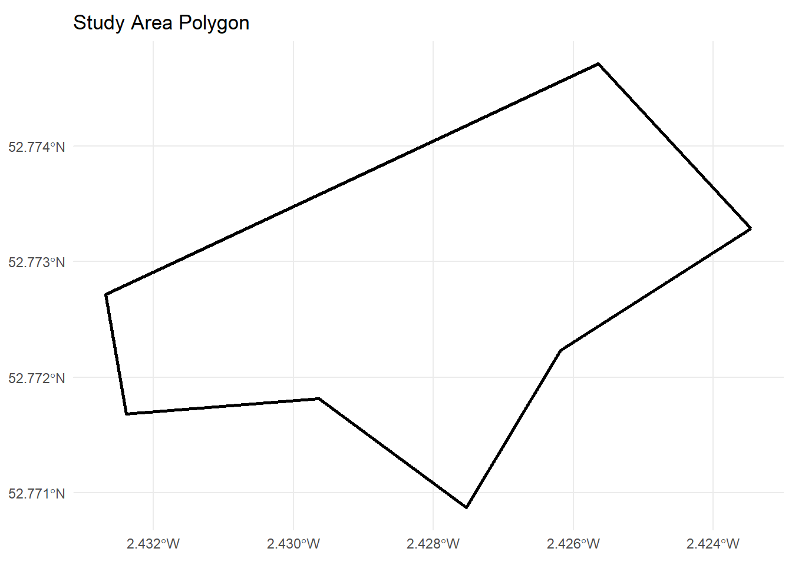
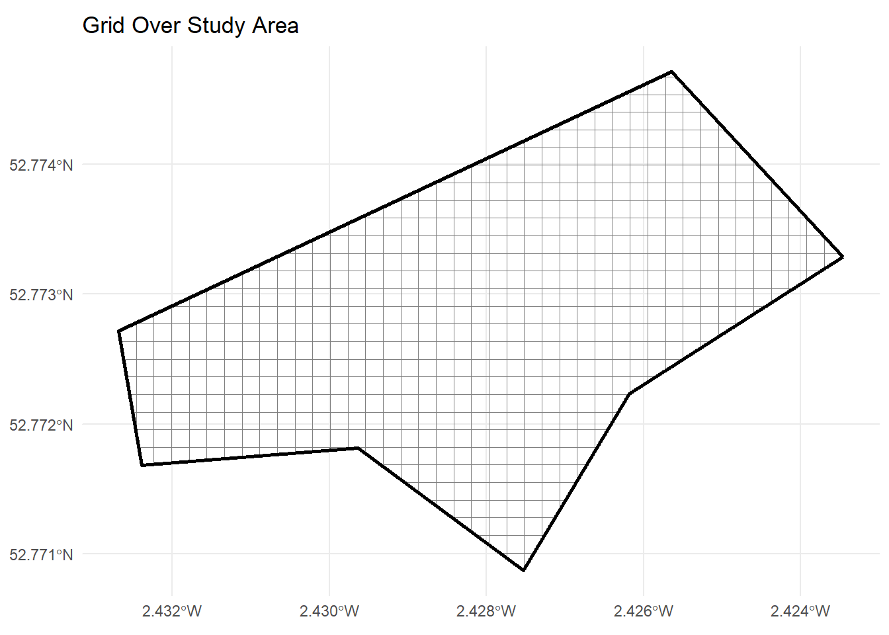
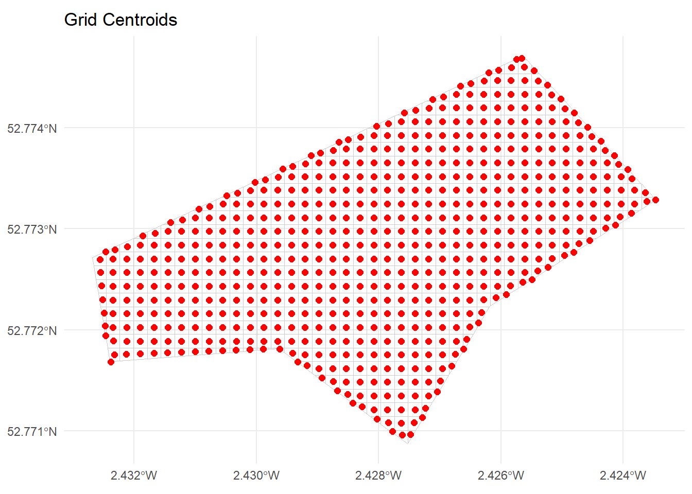
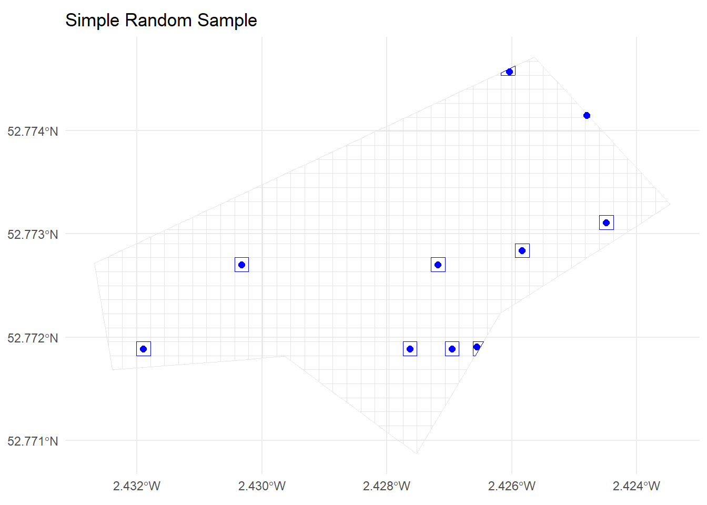
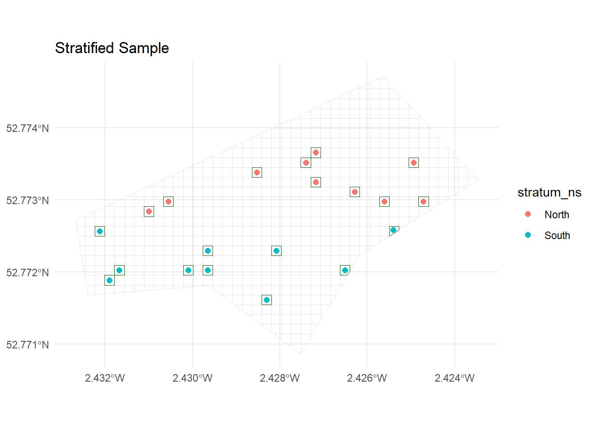
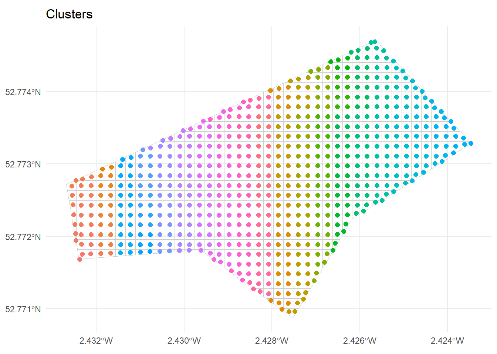
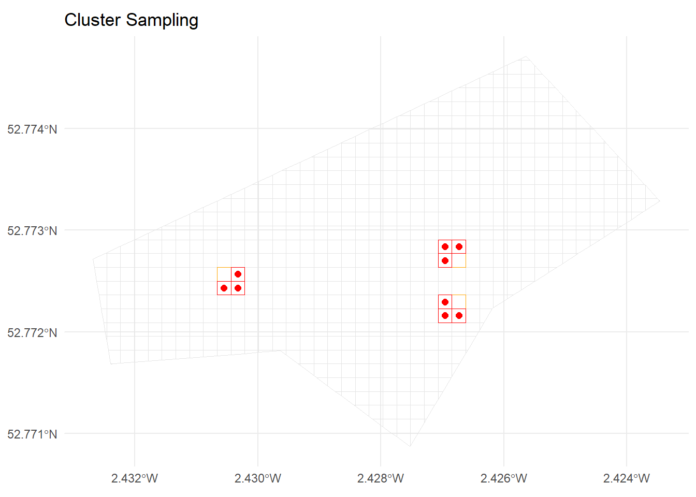
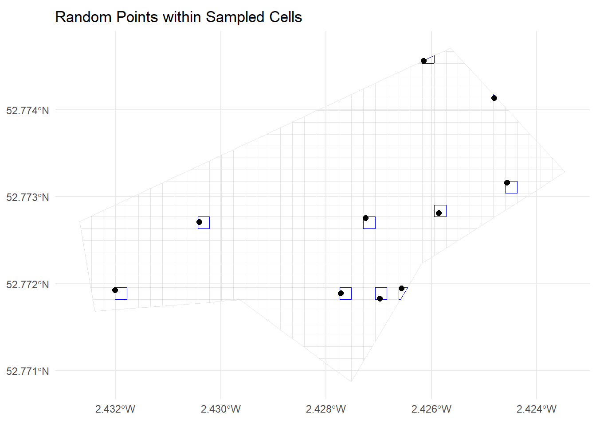

Code
# Core packages
library(sf)
library(dplyr)
library(ggplot2)
library(purrr)
library(tidyr)
set.seed(1234)Simple Random, Stratified, and Cluster Designs
# Core packages
library(sf)
library(dplyr)
library(ggplot2)
library(purrr)
library(tidyr)
set.seed(1234)In this 2-hour, hands-on tutorial you will learn how to:
Start from a single (monolithic) polygon representing your study area (e.g. a field, farm, or region) in GeoJSON format.
Create a regular grid over this polygon using sf.
Use the grid as a sampling frame.
Implement simple random sampling, stratified sampling, and cluster sampling.
Visualise the results.
We assume you have a file named starter.geojson. To load our study area polygon, we use the sf package, which is the standard for handling spatial vector data in R. The function st_read() is used to read the GeoJSON file (starter.geojson) into R as an sf object. This allows us to work with the polygon using other spatial functions and operations.
We then use st_transform() to reproject the polygon to a projected coordinate reference system (CRS), specifically EPSG:3857 (Web Mercator). This is important because many spatial operations (such as creating grids or measuring area/distance) require coordinates in metres (projected), not degrees (geographic coordinates like WGS84/EPSG:4326). Projected CRS ensures accurate units for spatial sampling and visualisation.
The object is then plotted using the ggplot2 package, leveraging its geom_sf() function which is designed for simple plotting of spatial features stored as sf objects. This produces a clean visualisation of the study area polygon.
Summary of Packages and Functions:
sf::st_read() loads the GeoJSON polygon into R as an sf object.
sf::st_transform() projects the geometry to a CRS in metres (for spatial operations).
ggplot2::ggplot() with geom_sf() visualises the spatial object.
This workflow establishes a ready-to-use, projected (sf) version of our study area for further spatial sampling steps.
study_area <- st_read("starter.geojson") |>
st_transform(3857) # Transform to projected CRS if neededReading layer `starter' from data source
`C:\Users\00760770\Documents\GitHub\SQ4013\starter.geojson'
using driver `GeoJSON'
Simple feature collection with 1 feature and 0 fields
Geometry type: POLYGON
Dimension: XY
Bounding box: xmin: -2.432683 ymin: 52.77087 xmax: -2.42346 ymax: 52.77471
Geodetic CRS: WGS 84study_areaSimple feature collection with 1 feature and 0 fields
Geometry type: POLYGON
Dimension: XY
Bounding box: xmin: -270805 ymin: 6940727 xmax: -269778.3 ymax: 6941434
Projected CRS: WGS 84 / Pseudo-Mercator
geometry
1 POLYGON ((-269778.3 6941172...ggplot() +
geom_sf(data = study_area, fill = NA, colour = "black", linewidth = 1) +
ggtitle("Study Area Polygon") +
theme_minimal()
To perform spatial sampling, we need a set of distinct, spatially-defined sampling units within our study area. Rather than randomly picking arbitrary points, it’s much more structured and reproducible to overlay a regular grid of cells (often squares) over the polygon. Each cell then represents a possible sampling unit.
Why create a grid?
Sampling Frame: The grid provides a sampling frame of discrete, countable units, ensuring every part of the study area has a clear chance to be included in the sample.
Spatial Representation: It helps translate abstract sampling concepts (like “Simple Random Sample”) into concrete spatial terms—cells are equivalent to population members in survey sampling.
Versatility: The grid supports stratified, cluster, and systematic sampling, and is easy to adapt for spatial analyses or visualisation.
Geometric Compatibility: Regular cell shapes (squares) simplify measurement, distance, coverage checks, and stratification.
Without a grid (i.e., just sampling random points), it is difficult to control for spatial distribution, equal-area representation, or to implement more advanced sampling strategies. The grid is a foundation for all downstream steps—it allows us to choose sample cells (or their centroids), visualise inclusion, and later allocate samples to specific locations, all within a reproducible framework.
cell_size <- 25
grid_raw <- st_make_grid(
study_area,
cellsize = cell_size,
square = TRUE
)
grid_sf <- st_sf(cell_id = 1:length(grid_raw), geometry = grid_raw) |>
st_intersection(study_area)
grid_sfSimple feature collection with 628 features and 1 field
Geometry type: POLYGON
Dimension: XY
Bounding box: xmin: -270805 ymin: 6940727 xmax: -269778.3 ymax: 6941434
Projected CRS: WGS 84 / Pseudo-Mercator
First 10 features:
cell_id geometry
22 22 POLYGON ((-270255 6940752, ...
23 23 POLYGON ((-270255 6940752, ...
24 24 POLYGON ((-270230 6940752, ...
63 63 POLYGON ((-270280 6940777, ...
64 64 POLYGON ((-270280 6940777, ...
65 65 POLYGON ((-270255 6940777, ...
66 66 POLYGON ((-270230 6940752, ...
67 67 POLYGON ((-270205 6940777, ...
103 103 POLYGON ((-270330 6940802, ...
104 104 POLYGON ((-270330 6940802, ...ggplot() +
geom_sf(data = grid_sf, fill = NA, colour = "grey50") +
geom_sf(data = study_area, fill = NA, colour = "black", linewidth = 1) +
ggtitle("Grid Over Study Area") +
theme_minimal()
Why do we create centroids if we already have a grid?
While the grid defines cells (the spatial sampling units), centroids provide a simple, representative point within each cell. There are several reasons why working with centroids is often preferred in practice:
Simplicity: Centroids reduce each (sometimes complex) polygonal cell to just a single (x, y) coordinate, making calculations, visualisation, and point-based sampling straightforward.
Homogeneity Assumption: In most grid sampling applications, we assume the conditions inside each cell are sufficiently homogeneous for the centroid to represent the whole cell (“quadrat” approach). This means any measurement at the centroid is considered “typical” of the cell.
Statistical Compatibility: Many statistical and geostatistical methods require point data or simpler spatial relationships, which centroids provide.
Sampling Practicality: It’s operationally easier to visit or target a coordinate (the centroid) than a whole area, especially in field or remote sensing sampling.
Composite sampling in every quadrat (cell)
However, scientists often recommend composite sampling within each quadrat: Instead of measuring only at the centroid, you take multiple (sub-)samples at various spots within the cell and average (or pool) their values. This makes the sample more representative of the cell:
Reduces micro-scale bias: A single point might miss local heterogeneity, while a composite (e.g., averaging 3+ sub-samples per cell) reflects cell-wide conditions.
Improved inference: Composite samples ensure the grid-cell truly represents an area, not just the conditions at its centre.
In summary: Centroids are practical and serve as a default representative location for each cell, but composite sampling within quadrats is often advised for a more robust, area-based spatial sample.
grid_centroids <- st_centroid(grid_sf)
grid_centroids <- grid_centroids |>
mutate(
x = st_coordinates(geometry)[, 1],
y = st_coordinates(geometry)[, 2]
)
grid_centroidsSimple feature collection with 628 features and 3 fields
Geometry type: POINT
Dimension: XY
Bounding box: xmin: -270790.9 ymin: 6940743 xmax: -269779.5 ymax: 6941430
Projected CRS: WGS 84 / Pseudo-Mercator
First 10 features:
cell_id geometry x y
22 22 POINT (-270258.3 6940750) -270258.3 6940750
23 23 POINT (-270240.2 6940743) -270240.2 6940743
24 24 POINT (-270225.4 6940744) -270225.4 6940744
63 63 POINT (-270286.2 6940772) -270286.2 6940772
64 64 POINT (-270266.4 6940766) -270266.4 6940766
65 65 POINT (-270242.5 6940764) -270242.5 6940764
66 66 POINT (-270219.3 6940766) -270219.3 6940766
67 67 POINT (-270203.8 6940775) -270203.8 6940775
103 103 POINT (-270330.8 6940801) -270330.8 6940801
104 104 POINT (-270314 6940795) -270314.0 6940795ggplot() +
geom_sf(data = grid_sf, fill = NA, colour = "grey80") +
geom_sf(data = grid_centroids, colour = "red", size = 2) +
ggtitle("Grid Centroids") +
theme_minimal()
Simple Random Sampling (SRS) is the simplest probability-based sampling design. In SRS, each possible sampling unit (here, each grid cell or its centroid) has an equal probability of being selected. There is no stratification, clustering, or any imposed structure — cells are chosen entirely at random.
Equal Probability: Every cell in the grid frame has the same chance of inclusion.
Independence: The selection of one cell does not affect the selection of any other; there are no restrictions.
Simplicity: SRS is easy to implement and analyse statistically, with many estimators and confidence intervals relying on its properties.
You specify a desired sample size, say, \( n = 10 \).
Randomly select \( n \) cells (or centroids) from the full set of available grid cells.
Each selected cell forms part of your sample for field measurement or further study.
When is SRS appropriate?
When the sampling frame is homogeneous, or when there is no strong motivation to incorporate additional structure (like stratification or clustering).
For pilot studies or when simplicity and unbiasedness are the priorities.
Limitations:
If the study area has strong environmental gradients or is heterogeneous, SRS may result in poor representation of certain sub-regions.
May lead to spatially “clumped” samples purely by chance (less spatial coverage).
The next code block will implement SRS on the centroids within the study area grid.
n_srs <- 10
srs_sample <- grid_centroids |>
st_drop_geometry() |>
sample_n(n_srs) |>
pull(cell_id)
srs_cells <- grid_sf |>
filter(cell_id %in% srs_sample)
srs_points <- grid_centroids |>
filter(cell_id %in% srs_sample)
srs_cellsSimple feature collection with 10 features and 1 field
Geometry type: POLYGON
Dimension: XY
Bounding box: xmin: -270730 ymin: 6940902 xmax: -269880 ymax: 6941418
Projected CRS: WGS 84 / Pseudo-Mercator
cell_id geometry
1 298 POLYGON ((-270730 6940927, ...
2 317 POLYGON ((-270255 6940927, ...
3 320 POLYGON ((-270180 6940927, ...
4 322 POLYGON ((-270130 6940902, ...
5 557 POLYGON ((-270555 6941077, ...
6 571 POLYGON ((-270205 6941077, ...
7 619 POLYGON ((-270055 6941102, ...
8 709 POLYGON ((-269905 6941152, ...
9 1044 POLYGON ((-269930 6941327, ...
10 1164 POLYGON ((-270055 6941402, ...ggplot() +
geom_sf(data = grid_sf, fill = NA, colour = "grey90") +
geom_sf(data = srs_cells, fill = NA, colour = "blue") +
geom_sf(data = srs_points, colour = "blue", size = 2) +
ggtitle("Simple Random Sample") +
theme_minimal()
Stratified sampling is a probability-based sampling technique in which the entire population (here, the area to be sampled) is divided into non-overlapping subgroups, called strata, based on a chosen characteristic (stratification variable). Each stratum is internally homogeneous (similar within), but distinct from other strata (different between strata). The key idea is to ensure that the sample represents all parts of the population, especially subgroups that may otherwise be under- (or over-) represented if using simple random sampling.
In spatial studies, common strata are based on geography (e.g., north/south, ecological zones, land cover types, altitude bands), administrative units, or other relevant variables. Stratified sampling is especially valuable if the variable of interest is expected to vary systematically across strata.
How does stratified sampling work?
Define strata: Partition your population (here: grid cells covering the study area) into subsets. In our example, we use a median split on the ‘y’ coordinate, dividing the area into “North” and “South” strata.
Decide sample size per stratum: This can be proportional (sample size per stratum proportional to stratum size), or equal allocation, or other allocation rules. Proportional allocation is very common.
Random sample within strata: For each stratum, select the desired number of units randomly.
Advantages:
Ensures all sub-regions are represented.
Can yield more precise (lower-variance) estimates if strata are meaningful.
Reduces risk of missing rare or important sub-populations.
Limitations:
Requires information to define suitable strata.
More complex to design and implement than SRS.
In the code below, stratified sampling is implemented in a stepwise fashion:
Create strata:
The code first calculates the median ‘y’ coordinate (i.e., latitude-like position) of grid centroids, then assigns each centroid to “North” (if y >= median) or “South” (otherwise). This creates North/South strata that split the area horizontally.
Count grid cells per stratum:
The number of grid centroids in each stratum is counted. These counts determine the proportional allocation for sampling.
Determine proportional sample sizes:
Given a desired total sample size (e.g., n_total <- 20), each stratum is allocated a sample size proportional to its share of the total grid (rounded). For example, if “North” contains 44% of all grid cells, it receives 44% of the sample.
Draw stratified random samples:
For each stratum, the code randomly selects the corresponding number of units (using sample_n()), ensuring every stratum is represented.
This ensures that sampling is geographically balanced (here, by north/south position), and that every sub-region gets sampled fairly relative to its size.
In summary:
Stratified sampling divides the sampling frame according to a chosen characteristic, then randomly samples within each stratum, with allocation (how many per stratum) according to the stratum’s relative size. The implementation here is spatially intuitive and ensures both “North” and “South” gets covered.
y_median <- median(grid_centroids$y)
grid_centroids <- grid_centroids |>
mutate(
stratum_ns = ifelse(y >= y_median, "North", "South")
)
grid_centroids |>
st_drop_geometry() |>
count(stratum_ns) stratum_ns n
1 North 329
2 South 299ggplot() +
geom_sf(data = grid_sf, fill = NA, colour = "grey90") +
geom_sf(data = grid_centroids, aes(colour = stratum_ns), size = 2) +
ggtitle("Strata: North vs South") +
theme_minimal()
n_total <- 20
stratum_counts <- grid_centroids |>
st_drop_geometry() |>
count(stratum_ns) |>
mutate(prop = n / sum(n)) |>
mutate(n_stratum = round(prop * n_total))
stratum_counts stratum_ns n prop n_stratum
1 North 329 0.5238854 10
2 South 299 0.4761146 10strat_sample_ids <- grid_centroids |>
st_drop_geometry() |>
left_join(stratum_counts, by = "stratum_ns") |>
group_by(stratum_ns) |>
group_modify(~ slice_sample(.x, n = .x$n_stratum[1])) |>
pull(cell_id)
strat_cells <- grid_sf |>
filter(cell_id %in% strat_sample_ids)
strat_points <- grid_centroids |>
filter(cell_id %in% strat_sample_ids)
strat_cellsSimple feature collection with 20 features and 1 field
Geometry type: POLYGON
Dimension: XY
Bounding box: xmin: -270755 ymin: 6940852 xmax: -269905 ymax: 6941252
Projected CRS: WGS 84 / Pseudo-Mercator
First 10 features:
cell_id geometry
1 230 POLYGON ((-270330 6940877, ...
2 298 POLYGON ((-270730 6940927, ...
3 341 POLYGON ((-270705 6940952, ...
4 348 POLYGON ((-270530 6940952, ...
5 350 POLYGON ((-270480 6940952, ...
6 364 POLYGON ((-270130 6940927, ...
7 434 POLYGON ((-270480 6941002, ...
8 441 POLYGON ((-270305 6941002, ...
9 507 POLYGON ((-270755 6941052, ...
10 537 POLYGON ((-270005 6941027, ...ggplot() +
geom_sf(data = grid_sf, fill = NA, colour = "grey90") +
geom_sf(data = strat_cells, fill = NA, colour = "darkgreen") +
geom_sf(data = strat_points, aes(colour = stratum_ns), size = 2) +
ggtitle("Stratified Sample") +
theme_minimal()
Cluster sampling is a technique used in survey sampling where the population is divided into groups—called clusters—that are each intended to be “mini-populations” representing the population as a whole. Instead of sampling individuals directly from the full population, whole clusters are randomly selected, and then all (or a sample of) units within those clusters are surveyed. This approach is particularly useful when:
The population is large and geographically dispersed,
Collecting a simple random sample would be costly or logistically complex,
Natural groupings already exist (e.g., schools, villages, spatial grid regions).
Key features of cluster sampling:
Clusters are ideally heterogeneous: Each cluster should be as representative as possible of the overall population. If clusters differ greatly, cluster sampling can increase sampling error.
Sampling happens in stages: First, a subset of clusters is selected at random. Then, data are collected from all or a sample of units within those clusters.
Design effects: Estimates from cluster samples need to take clustering into account during statistical analysis, as individuals within the same cluster are often more similar to each other.
How is cluster sampling implemented here?
In this example, the spatial grid is first divided into clusters based on cell locations. We:
Assign cluster IDs: Grid cells are grouped together into clusters by location (see code in the create-clusters chunk).
Summarise clusters: The number of cells in each cluster is counted.
Randomly select clusters: A fixed number of clusters are chosen at random (see the cluster-sampling chunk).
Sample within clusters: For each selected cluster, a specified number of cells are drawn (see the following code chunk).
Visualise the sample: On a map, you can see which clusters (and cells within clusters) were selected.
This approach reduces costs by focusing effort in a limited number of locations while still allowing for statistical inference, provided proper analysis methods are used to account for the clustering.
cluster_size <- cell_size * 2
grid_centroids <- grid_centroids |>
mutate(
cluster_x = floor((x - min(x)) / cluster_size),
cluster_y = floor((y - min(y)) / cluster_size),
cluster_id = paste(cluster_x, cluster_y, sep = "_")
)
cluster_summary <- grid_centroids |>
st_drop_geometry() |>
count(cluster_id, sort = TRUE)
cluster_summary cluster_id n
1 9_1 7
2 0_3 6
3 0_4 6
4 0_5 6
5 0_6 6
6 10_0 6
7 11_0 6
8 14_5 6
9 2_3 6
10 3_3 6
11 4_3 6
12 5_3 6
13 7_2 6
14 11_11 5
15 13_12 5
16 13_4 5
17 16_6 5
18 17_7 5
19 19_8 5
20 5_8 5
21 6_3 5
22 7_9 5
23 8_2 5
24 9_10 5
25 10_1 4
26 10_10 4
27 10_2 4
28 10_3 4
29 10_4 4
30 10_5 4
31 10_6 4
32 10_7 4
33 10_8 4
34 10_9 4
35 11_1 4
36 11_10 4
37 11_2 4
38 11_3 4
39 11_4 4
40 11_5 4
41 11_6 4
42 11_7 4
43 11_8 4
44 11_9 4
45 12_10 4
46 12_11 4
47 12_2 4
48 12_3 4
49 12_4 4
50 12_5 4
51 12_6 4
52 12_7 4
53 12_8 4
54 12_9 4
55 13_10 4
56 13_11 4
57 13_5 4
58 13_6 4
59 13_7 4
60 13_8 4
61 13_9 4
62 14_10 4
63 14_11 4
64 14_12 4
65 14_6 4
66 14_7 4
67 14_8 4
68 14_9 4
69 15_10 4
70 15_11 4
71 15_12 4
72 15_13 4
73 15_5 4
74 15_6 4
75 15_7 4
76 15_8 4
77 15_9 4
78 16_10 4
79 16_11 4
80 16_7 4
81 16_8 4
82 16_9 4
83 17_10 4
84 17_8 4
85 17_9 4
86 18_7 4
87 18_8 4
88 18_9 4
89 1_3 4
90 1_4 4
91 1_5 4
92 1_6 4
93 2_4 4
94 2_5 4
95 2_6 4
96 2_7 4
97 3_4 4
98 3_5 4
99 3_6 4
100 3_7 4
101 4_4 4
102 4_5 4
103 4_6 4
104 4_7 4
105 4_8 4
106 5_4 4
107 5_5 4
108 5_6 4
109 5_7 4
110 6_4 4
111 6_5 4
112 6_6 4
113 6_7 4
114 6_8 4
115 6_9 4
116 7_3 4
117 7_4 4
118 7_5 4
119 7_6 4
120 7_7 4
121 7_8 4
122 8_10 4
123 8_3 4
124 8_4 4
125 8_5 4
126 8_6 4
127 8_7 4
128 8_8 4
129 8_9 4
130 9_2 4
131 9_3 4
132 9_4 4
133 9_5 4
134 9_6 4
135 9_7 4
136 9_8 4
137 9_9 4
138 0_2 3
139 10_11 3
140 12_12 3
141 13_3 3
142 14_13 3
143 16_12 3
144 17_11 3
145 18_10 3
146 8_1 3
147 12_1 2
148 17_6 2
149 19_9 2
150 1_2 2
151 1_7 2
152 20_8 1
153 3_8 1
154 5_9 1
155 7_10 1
156 9_0 1ggplot() +
geom_sf(data = grid_sf, fill = NA, colour = "grey80") +
geom_sf(data = grid_centroids, aes(colour = cluster_id), size = 2) +
ggtitle("Clusters") +
theme_minimal() +
theme(legend.position = "none")
n_clusters_to_sample <- 3
n_cells_per_cluster <- 3
clusters_to_sample <- cluster_summary |>
slice_sample(n = n_clusters_to_sample) |>
pull(cluster_id)
clusters_to_sample[1] "12_4" "4_5" "12_6"cluster_sample_ids <- grid_centroids |>
st_drop_geometry() |>
filter(cluster_id %in% clusters_to_sample) |>
group_by(cluster_id) |>
slice_sample(n = n_cells_per_cluster) |>
pull(cell_id)
cluster_cells <- grid_sf |>
filter(cell_id %in% cluster_sample_ids)
cluster_points <- grid_centroids |>
filter(cell_id %in% cluster_sample_ids)
cluster_cellsSimple feature collection with 9 features and 1 field
Geometry type: POLYGON
Dimension: XY
Bounding box: xmin: -270580 ymin: 6940952 xmax: -270130 ymax: 6941102
Projected CRS: WGS 84 / Pseudo-Mercator
cell_id geometry
1 404 POLYGON ((-270180 6940977, ...
2 405 POLYGON ((-270155 6940977, ...
3 446 POLYGON ((-270180 6941002, ...
4 472 POLYGON ((-270580 6941027, ...
5 473 POLYGON ((-270555 6941027, ...
6 515 POLYGON ((-270555 6941052, ...
7 572 POLYGON ((-270180 6941077, ...
8 614 POLYGON ((-270180 6941102, ...
9 615 POLYGON ((-270155 6941102, ...all_cells_in_sampled_clusters <- grid_centroids |>
st_drop_geometry() |>
filter(cluster_id %in% clusters_to_sample) |>
pull(cell_id)
clusters_all_cells <- grid_sf |>
filter(cell_id %in% all_cells_in_sampled_clusters)
ggplot() +
geom_sf(data = grid_sf, fill = NA, colour = "grey90") +
geom_sf(data = clusters_all_cells, fill = NA, colour = "orange") +
geom_sf(data = cluster_cells, fill = NA, colour = "red") +
geom_sf(data = cluster_points, colour = "red", size = 2) +
ggtitle("Cluster Sampling") +
theme_minimal()
random_point_in_polygon <- function(poly, n = 1) {
st_sample(poly, size = n, type = "random")
}
srs_random_points_geom <- map(
st_geometry(srs_cells),
~ random_point_in_polygon(.x, n = 1)[[1]]
) |>
st_sfc(crs = st_crs(study_area))
srs_random_points <- st_sf(
cell_id = srs_cells$cell_id,
geometry = srs_random_points_geom
)
srs_random_pointsSimple feature collection with 10 features and 1 field
Geometry type: POINT
Dimension: XY
Bounding box: xmin: -270729.7 ymin: 6940904 xmax: -269901 ymax: 6941407
Projected CRS: WGS 84 / Pseudo-Mercator
cell_id geometry
1 298 POINT (-270729.7 6940921)
2 317 POINT (-270252.8 6940915)
3 320 POINT (-270170.4 6940904)
4 322 POINT (-270124.2 6940925)
5 557 POINT (-270551.5 6941066)
6 571 POINT (-270200.1 6941074)
7 619 POINT (-270045.3 6941085)
8 709 POINT (-269901 6941149)
9 1044 POINT (-269928.7 6941328)
10 1164 POINT (-270077.4 6941407)ggplot() +
geom_sf(data = grid_sf, fill = NA, colour = "grey90") +
geom_sf(data = srs_cells, fill = NA, colour = "blue") +
geom_sf(data = srs_random_points, colour = "black", size = 2) +
ggtitle("Random Points within Sampled Cells") +
theme_minimal()
cell_size and re-run the grid creation.cluster_size and compare.st_write().